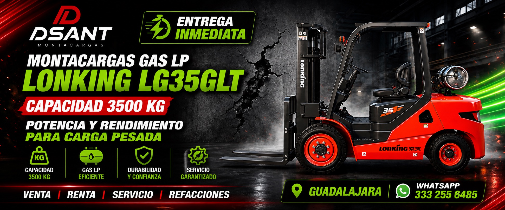
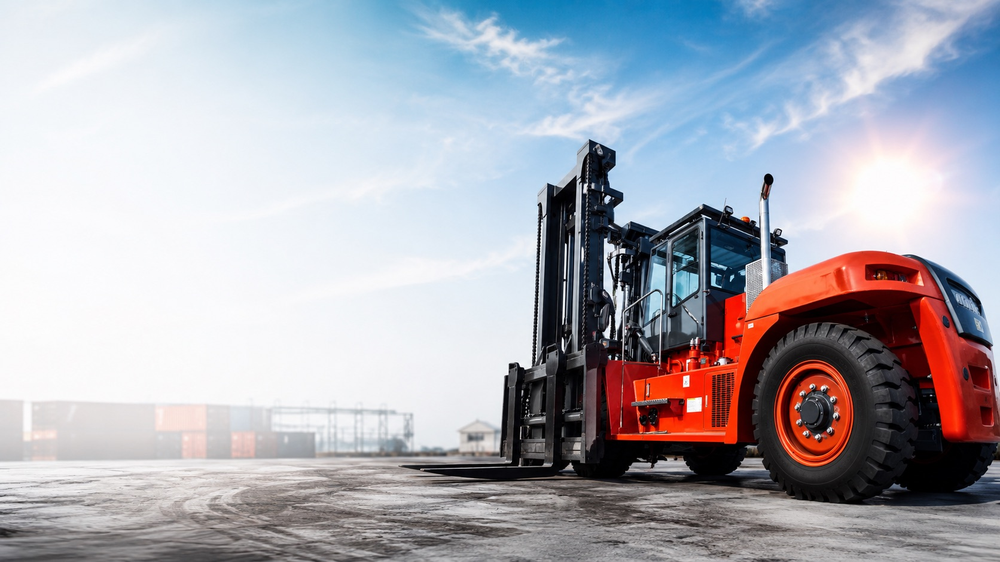
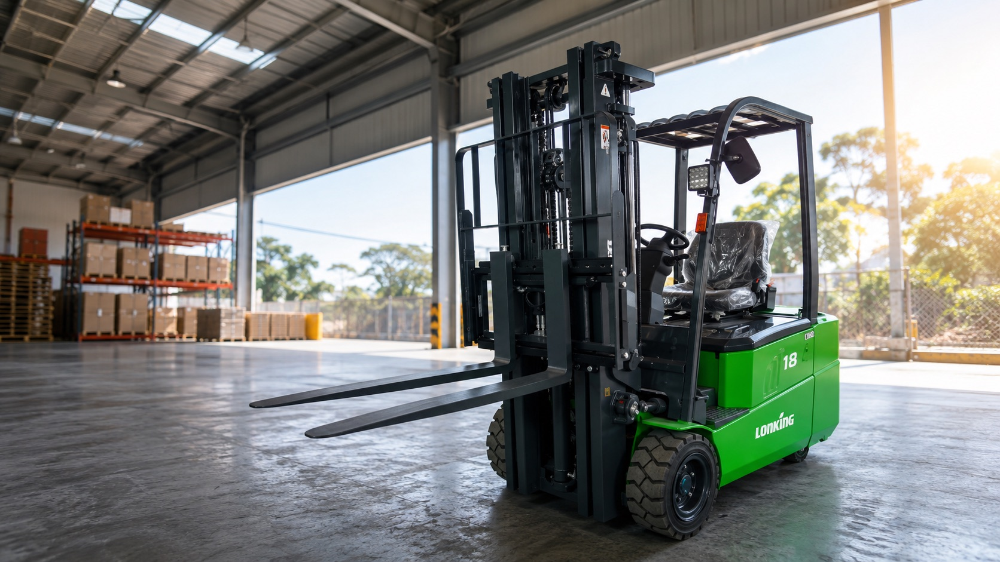

Disponible
Lonking LG35GLT Gas LP
Potencia y rendimiento para carga pesada con capacidad de 3500 kg. Ideal para patios, bodegas y movimientos industriales exigentes.

Montacargas en Guadalajara
Venta, renta, servicio y refacciones para operaciones que necesitan mover carga con seguridad, velocidad y respaldo técnico.
Atención en Guadalajara
+52 33 3148 1362 Venta · Renta · Servicio · RefaccionesDSANT selecciona equipos por capacidad, tipo de combustible, espacio de maniobra y ritmo de trabajo. Te ayudamos a elegir el montacargas correcto sin sobredimensionar tu inversión.

Disponible
Potencia y rendimiento para carga pesada con capacidad de 3500 kg. Ideal para patios, bodegas y movimientos industriales exigentes.

Interior
Soluciones limpias y silenciosas para almacén, racks, centros de distribución y espacios cerrados.
Exterior
Rendimiento para jornadas intensivas, rampas, patios de maniobra y cargas de gran volumen.
Resolvemos desde la selección del equipo hasta el mantenimiento. Menos vueltas, menos tiempos muertos y una respuesta más directa.
Equipos nuevos o disponibles para compra, elegidos por capacidad, altura de levante y ambiente de trabajo.
Opciones por proyecto, temporada o necesidad inmediata para mantener tu operación en movimiento.
Mantenimiento preventivo y correctivo para cuidar rendimiento, seguridad y vida útil del equipo.
Soporte para piezas clave, consumibles y componentes que evitan paros prolongados.
Por qué DSANT
Catálogo digital
Integramos el catálogo de catalogo.dsant.com.mx para que puedas revisar modelos, capacidades y opciones disponibles desde el ecosistema DSANT.
Cotización rápida
Comparte capacidad requerida, altura de levante, uso interior o exterior y tiempo de renta o compra. Con eso podemos responderte con una opción más precisa.
Contacto
Agenda una cotización para venta, renta, servicio técnico o refacciones.